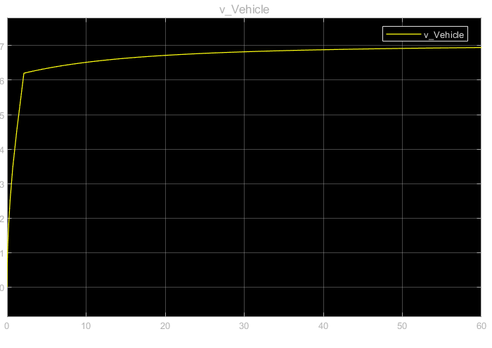
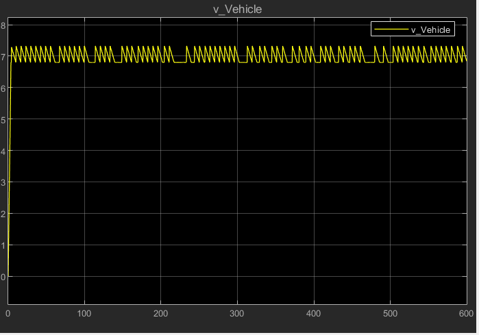
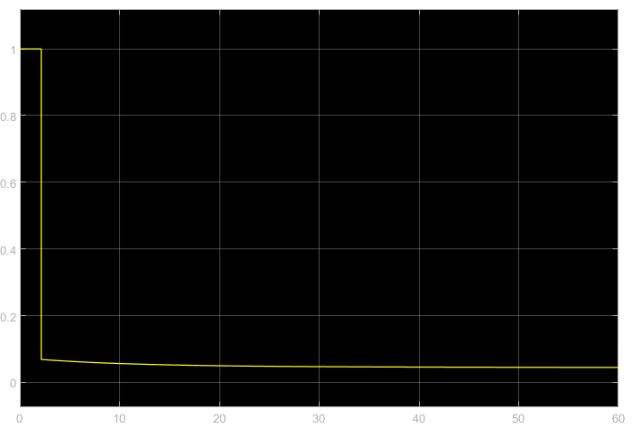
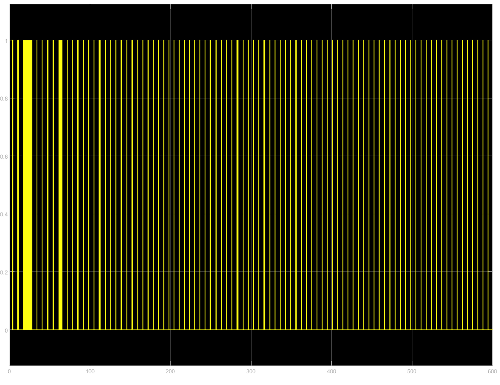
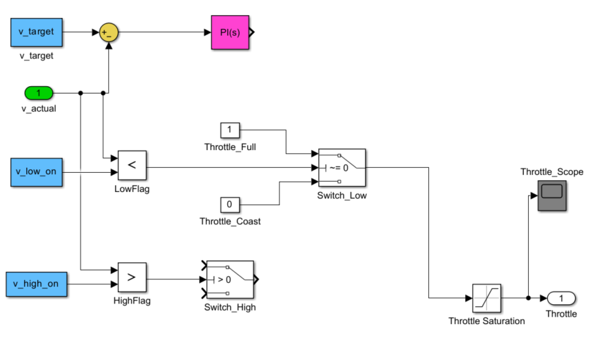
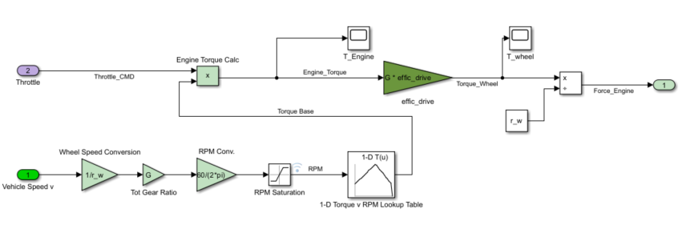

Realistic burn-coast driver strategy replacing PID cruise control behavior.
Version 6 represents a major correction in the simulation philosophy. Earlier versions used PID control to regulate vehicle speed, which produced smooth cruise-control behavior. While stable, this did not represent the real Shell Eco-Marathon driving strategy.
Real competition vehicles operate using a burn-and-coast strategy, where the engine runs at high efficiency during short bursts followed by long coasting periods with zero fuel consumption. Version 6 removes the PID controller and replaces it with a pure threshold-based control system that produces realistic pulsed throttle behavior.
Earlier PID-controlled simulations produced nearly constant velocity. The burn-coast controller produces oscillating velocity between upper and lower thresholds, matching real competition driving.

PID Controller Velocity Response (V3–V5) — nearly constant speed
Burn-Coast Velocity Response (V6) — realistic oscillating speed profileThrottle behavior clearly shows the difference between the two control approaches. The PID controller continuously adjusts throttle; the burn-coast controller produces discrete full-power pulses followed by long coasting intervals.

PID Throttle Response — continuous modulation
Burn-Coast Throttle Response — full on/off pulses
DriverStrat V6 Burn-Coast Controller
Powertrain V6 with Dyno Torque Map Lookup